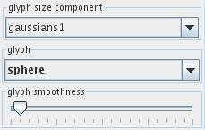
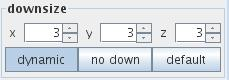
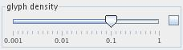
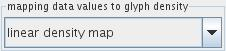
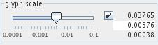
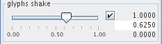
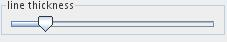
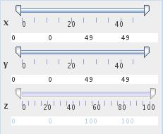
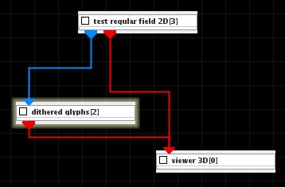
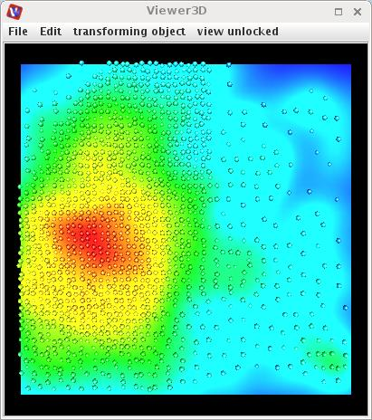

DITHERED GLYPHS
The dithered glyphs module places a geometrical object at random places of an input field. Density of glyphs is proportional to the values of the glyph size component. Glyphs can be sized and colored according to the selected data component.
Input data
The input field is regular.
Output data
A 3D geometry object of a field.
Presentation parameters
Part of the parameters are common for most modules and are discussed in the common interfaces section unter the Presentation Panel entry.
glyphs tab

The glyph size component drop down list defines the component of the input field which is used to scale the glyphs. By default the first component in the list is used.
There are different glyph geometries in the glyph drop down list, these are sphere, raindrop, snowflake, box, diamond.
The glyph smoothness slider adjusts the smoothness of glyphs.

The user can adjust downsize factors using the downsize input text fields. Downsize reduces the size of the field, saving processing time and memory by "thinning out" the data. Default downsize values depend on the dimensions of the input field and are chosen automatically.
If dynamic button is on output is generated every time the downsize parameter changes. No down button cancels downsize. Default button adjusts the default values for downsize.

The glyph density slider scales glyph density. If check box on the right hand side is on the user can change minimum, maximum and current value typing the values into the text fields.

The mapping data values to glyph density drop down list defines the mapping type of data values of the glyph size component onto glyph density. Available options are linear density map, logarithmic density map, square root density map and arc tangens density map.

The glyph scale slider allows to scale the glyph size. If check box on the right hand side is on the user can change minimum, maximum and current value typing the values into the text fields.

The glyph shake slider specifies deviation of the glyph positions from nodes. This deviation is determined randomly.

The line thickness slider defines thickness of line elements.
crop tab

The data volume crop sliders select the geometric extents of the regular field, i.e. lower and upper bound array indices in their respective dimensions.
Example

Choose test regular field 2D module from test objects library and dithered glyphs module from general mappers and accessories library and connect them.
In the dithered glyphs module GUI choose for glyph size component vortex, and for glyph arrow, downsize x, y and z by an appropriate value, choose constant size glyphs and an appropriate value for glyph scale.
